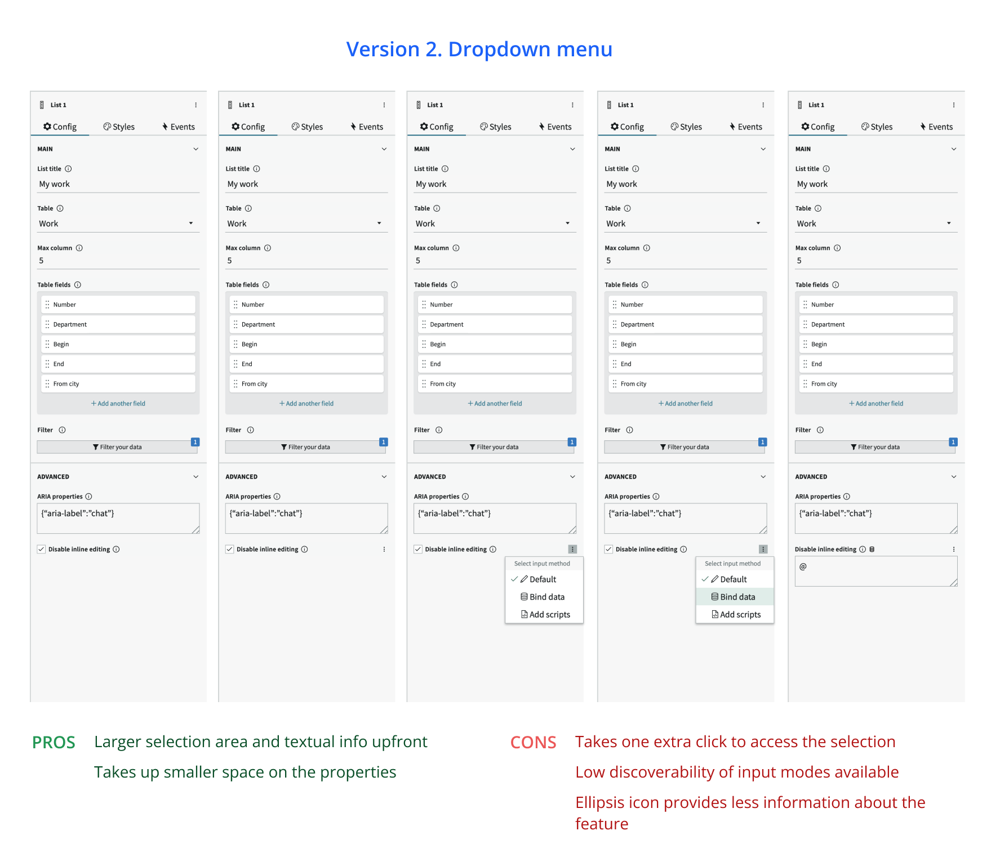
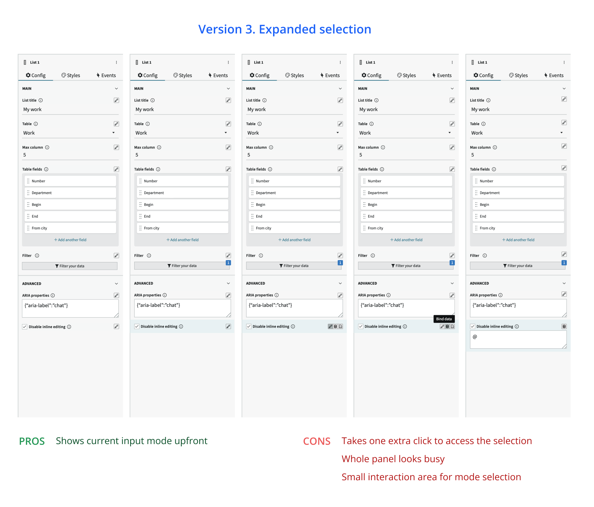

UI Builder configuration
One of the first projects I worked on at the UI Builder team was to enhance the configuration experience of the product. The outcomes have benefitted both internal component teams as well as the end-users of the product.

Timeline
Design in Aug 2020
Video creation in Nov 2020
My role
Product designer, working with
a PM, a resesarcher, an
information architect, and multiple engineers
Skills used
Rapid design iteration
Cross-functional collaboration
Cross-team communication
Tools
Figma
Miro
Excel
Adobe Premiere Pro
BACKGROUND
What is UI Builder?
UI Builder allows ServiceNow administrators and developers to build interactive web apps on the Now Platform in a WYSIWYG, low-code fashion.

UI Builder currently supports 115+ customizable components.
THE CHALLENGES
It's more than a design project
Previously, UI Builder only supported building Workspace pages, with less than 20 components available. For the Quebec release in early 2021, the team planned to add 80+ additional components so that more versatile pages can be built. The increase in components also came with the need for an enhanced configuration experience. Based on previous research insights, the team identified a few major topics to tackle:
- The input mode switcher needed to be enhanced to accommodate multiple dynamic input methods
- There are inconsistencies across different components' configuration; arbitrary terms were used and there's a lack of help experience

Insights gathered from previous usability research served as the foundation for the enhancement project
1. INPUT MODE SWITCHER DESIGN
How might we allow users to input static and dynamic property values seamlessly?
One major feature in the Quebec release was the introduction of dynamic inputs. By linking property values to data resource outputs and scripts, users can display content dynamically. All configuration properties should thus support three input modes:
- Static input: The input value is provided by typing in the field or selecting from a drop-down list
- Dynamic data-binding: The value is driven by output from a data resource
- Scripting: The value is determined by script output
In the earlier development phase, only static input and dynamic data-binding were supported. Binding properties to data could be done through clicking the block icon that is placed next to each property. With inclusion of the scripting option, a new design is needed to accommodate the three entry modes, while addressing usabilities issues discovered in previous research:
- The buttons were visually overwhelming and sacrificed space for input field
- The usage of icon has confused users
- Values provided in one input mode will be erased after switching back from another mode
Based on research insights, I listed the key experience outcomes for the new design:
The key experience outcomes for the input switcher design.
What the configuration panel looked like before design input, with only dynamic data-binding supported.
Left: Properties with dynamic data-binding; Right: Properties with both dynamic data binding and scripting
To address the usability and scalability issues of the inputs, I did a comparative analysis on the treatment by other products, and explored different ways to reimagine property input:
Comparison between different product's configuration design provided me with inspirations
Key exploration 1: button group with a different set of icons that shows up on hovering the property area.
Feedback: while this did reduce visual clutter, the buttons were too small, making them hard to interact.

Key exploration 2: dropdown options for toggling between input modes.
Feedback: the purpose of the ellipsis wasn't clear upfront, and it requires one extra click to switch input modes.

Key exploration 3: button group with a larger clickable area.
Feedback: hover state using the color could be too jarring; more explorations could be done to indicate the property area.
After multiple rounds of iterations and discussions with the cross-functional team, I've come down to the final design that does not visually overwhelm the panel, and could also support more discoverability and interactivity.
Final design

The working feature
Aside from adding the new design for the input switcher, the team have also ensured values entered for one mode could be preserved after toggling back from another mode in order to address user frustration observed in the research sessions.
What's more, we've also enhanced the experience of editing scripts. Previously, all scripts could only be editing the confined input box located in the configuration panel, which was difficult work on for our users. With the new design and the script editor enabled by the engineers, users can directly edit the script in a larger modal that opens once the scripting mode is turned on.
2. ALIGNING CONFIGURATIONS
How might we provide consistency across different components' configuration experience?
Operating under a contribution model, we have observed more inconsistencies between different component's configurations with the increase of 400+% components. These included different naming and UI for the same configuration property. To understand the root causes and pinpoint the main issues, we chatted with multiple internal component author teams to understand the building process and their pain points:
- Component designers did not know what UIs were available and suitable for different types of properties;
- Component teams did not know that a name for the same property existed for a different component, resulting in them coming up for another name for the property
- Users would often have to resort to the documentation site while configuring a component because there is no in-context help
To tackle these issues, I worked with the PM and a technical writer on a series of efforts to align the configuration experience. First, we audited all components on UI Builder, compared similar names and provided recommendations for each component author team.
Secondly, I created a playbook for the configuration panel and a video to explain best practices and resources. The materials were published on an internal SharePoint site.
Lastly, working with the PM, we added an in-context popover design to inlcude short descriptions for the property names.
Co-working with technical writer, we aligned different property names across different components and provided tooltip content for each property
Video created for internal component author teams
KEY TAKEAWAYS
Applying platform thinking to the design process
This was one of the first projects that I worked on after joining the team. Compared with other product categories, designing for a platform like UI Builder required additional thinking and mindset. Because each decision made would impact the other teams that rely our product to bring their experiences, the ability to think holistically and design for flexibility while providing the best for the users possible has been what I learned the most throughout the project.